Projeto Integrador · Física e Tecnociência, Programação e Robótica
A mesma luz que se separa em cores no Disco de Newton pode aquecer a piscina do CEP.
Dois projetos, um só fenômeno: o comportamento da luz branca ao encontrar uma superfície. Aqui você vê o experimento clássico de Newton lado a lado com uma proposta real de aquecimento solar automatizado — e entende, passo a passo, o que liga um ao outro.
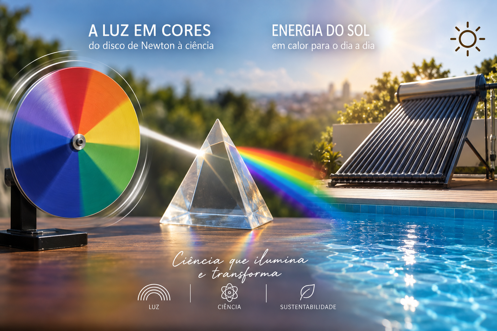
O que colocar aqui: uma imagem de capa que já sugira a ligação entre os dois temas — por exemplo, o disco de Newton girando de um lado e a piscina/coletor solar do outro, ou uma composição com prisma + água.
Disco de Newton — a soma de todas as cores
O Disco de Newton é um experimento físico educacional que demonstra, a olho nu, como as sete cores do espectro visível se recombinam em branco quando giram em alta velocidade — a mesma ideia que Isaac Newton comprovou com um prisma, há mais de três séculos.
Simulação de rotação do disco
Clique para simular a rotação em alta velocidade e observar a ilusão de fusão das cores em branco. Clique de novo para parar.
Disco parado. As sete cores estão visíveis separadamente.
Introdução
Um círculo de cores que engana o olho
O disco de Newton é um experimento físico educacional que explica a luz branca na área da óptica. Consiste em um disco com sete cores (vermelho, laranja, amarelo, verde, azul, índigo e violeta), que gira em alta velocidade, fazendo com que as cores se misturem a olho nu e o disco pareça ficar branco.
Essa ilusão ocorre porque nossos olhos não conseguem ver cada cor do disco em alta velocidade separadamente. A imagem de todas as cores fica gravada na nossa mente por um instante curto, criando a ilusão de que elas se misturam em uma só cor branca — um fenômeno conhecido como persistência retiniana.
Isaac Newton — quem foi?
O físico que decompôs a luz
Isaac Newton (1643–1727) foi um renomado físico, astrônomo e matemático inglês, criador de estudos e teorias que são utilizados até hoje no mundo todo. É famoso pela formulação das três leis do movimento (leis de Newton) e da lei da gravitação universal. Também estudou a composição da luz branca, o que conduziu à óptica moderna. Suas obras são referências fundamentais para o estudo da matemática e da física atual.
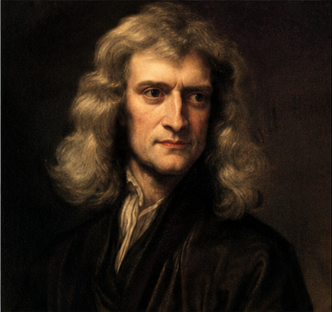
O que colocar aqui: um retrato de Isaac Newton (pintura ou gravura de época).
Seus estudos sobre a luz
O prisma que revelou o espectro
Isaac Newton realizou importantes estudos sobre a luz, utilizando prismas para demonstrar que a luz branca é formada por várias cores. Ao passar pelo prisma, a luz se separava em um espectro de cores, semelhante ao arco-íris.
Suas experiências ajudaram a comprovar que as cores fazem parte da própria luz e contribuíram para uma melhor compreensão da formação do arco-íris e de fenômenos relacionados à luz e às cores.
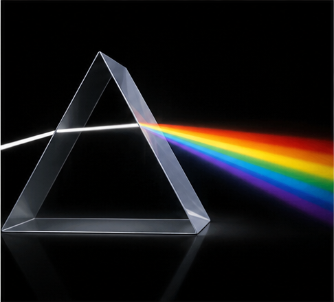
O que colocar aqui: foto ou diagrama de um prisma decompondo um feixe de luz branca em um espectro de cores.
Como funciona o disco de Newton?
Da divisão das cores ao branco aparente
- 01
Divisão das cores
O disco é dividido em várias partes, cada uma pintada com uma cor do espectro visível.
- 02
Rotação
Quando o disco começa a girar rapidamente, as cores passam diante dos nossos olhos em sequência.
- 03
Mistura visual
Devido à velocidade da rotação, nossos olhos não conseguem distinguir cada cor separadamente.
- 04
Aparência branca
As cores se misturam visualmente e o disco passa a parecer branco ou esbranquiçado.
- 05
Conclusão
O experimento demonstra que a luz branca pode ser associada à combinação de diferentes cores.
O que o Disco de Newton tem a ver com a piscina do CEP?
Os dois projetos partem da mesma pergunta de física: o que acontece quando a luz branca encontra uma superfície? O Disco de Newton e o coletor solar da piscina respondem essa pergunta de dois jeitos opostos — e é exatamente esse contraste que explica por que escolhemos placas escuras para aquecer água.
Disco de Newton — girando
Todas as cores são refletidas e se somam em branco
O disco pintado com as sete cores do espectro gira rápido o bastante para que o olho não consiga mais separar cada cor. Cada setor continua refletindo sua própria cor normalmente — o que muda é a nossa percepção: a persistência retiniana soma essas reflexões e o cérebro interpreta o resultado como branco. É a síntese aditiva da luz: luz mais luz forma mais luz, até chegar ao branco.
Placa coletora — parada, na piscina
Todas as cores são absorvidas e viram calor
A placa do coletor solar é pintada de preto fosco de propósito. Uma superfície preta não devolve praticamente nenhuma cor: ela absorve o espectro visível quase inteiro. Essa energia luminosa não vira uma cor nova — ela vira energia térmica, aquecendo a água que circula dentro da placa. É o oposto do disco em repouso: em vez de refletir e somar cores, a placa retém a luz e a transforma em calor.
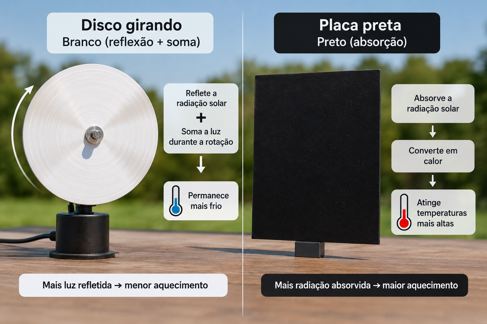
O que colocar aqui: um diagrama comparativo de sua autoria — de um lado o disco girando com uma seta apontando para "branco (reflexão + soma)", do outro a placa preta com uma seta apontando para "calor (absorção)". Pode ser desenhado à mão e fotografado, ou feito digitalmente.
Por que isso importa para o projeto
Entender o Disco de Newton não é só um exercício sobre óptica: ele explica, na prática, por que a cor de uma superfície decide quanto calor ela absorve do sol. Se a placa do coletor fosse branca, ela se comportaria como o disco girando — refletindo as cores de volta e desperdiçando a energia que deveria virar calor. Como é preta, ela faz o caminho inverso: guarda a luz para si e a converte em temperatura. O mesmo princípio de óptica que faz o disco "sumir" em branco é o que garante que o coletor não desperdice luz solar.
Essa é a ponte física entre os dois projetos: um mostra o que os olhos veem quando a luz é somada; o outro mostra o que a água sente quando a luz é retida.
Sol na piscina — aquecimento solar térmico para o CEP
O problema
Aquecer uma piscina térmica custa caro — e pode custar menos ao planeta
Piscinas térmicas escolares costumam depender de aquecimento a gás ou resistência elétrica, com alto consumo energético e custo recorrente. O desafio do nosso Projeto Integrador foi imaginar uma solução conceitual que usasse o próprio Sol como fonte primária de calor, com um sistema de automação capaz de decidir, sozinho, quando aquecer e quando poupar.
Para isso, unimos três frentes de estudo do trimestre: a física da luz (óptica aplicada a coletores solares — a mesma óptica do Disco de Newton, na seção acima), a lógica de sensores e atuadores (robótica e programação) e o compromisso de tornar o projeto compreensível e acessível a qualquer pessoa da comunidade escolar.
Física e Tecnociência
Três comportamentos da luz, um sistema de aquecimento
Nosso coletor solar não é mágica: é óptica aplicada. Absorção, reflexão e refração explicam por que ele funciona — e por que a escolha de cor e material da placa muda tudo.

O que colocar aqui: foto em close de um coletor solar térmico, mostrando a superfície escura que absorve luz.
Absorção
A placa coletora é escura de propósito: superfícies escuras absorvem quase todo o espectro visível, convertendo a energia luminosa em energia térmica na água que circula por dentro dela.
Reflexão
Um refletor posicionado atrás da placa direciona raios que escapariam de volta para o coletor, seguindo a lei da reflexão — ângulo de incidência igual ao ângulo de reflexão — para aproveitar mais luz por metro quadrado.
Refração
A cobertura de vidro ou policarbonato do coletor deixa a luz entrar, mas dificulta a saída do calor infravermelho — o mesmo princípio óptico usado em estufas, aplicado em escala de piscina.
Analogia · Disco de Newton
Como já vimos na seção A pesquisa, quando o disco gira rápido, as sete cores se misturam e o olho enxerga branco. Nas placas do coletor vale o caminho inverso: uma superfície preta não devolve nenhuma cor — ela absorve o espectro inteiro e o transforma em calor.
Analogia · Câmara escura
Na câmara escura, um orifício controla exatamente por onde a luz entra, formando uma imagem previsível dentro de uma caixa fechada. O coletor aplica a mesma ideia de "luz controlada em um espaço fechado": a cobertura transparente deixa a radiação entrar, a caixa isolada evita que o calor escape, e o resultado é um ambiente interno previsivelmente mais quente.
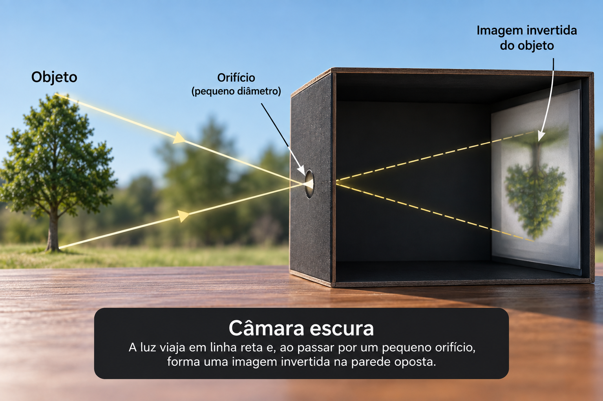
O que colocar aqui: um diagrama de câmara escura, mostrando raios de luz atravessando um pequeno orifício e formando uma imagem invertida na parede oposta.
Como o sistema decide, sozinho, quando aquecer a piscina
O coletor solar resolve a física; sensores e atuadores resolvem a lógica. O fluxograma abaixo mostra o ciclo de decisão que a automação repetiria continuamente.
→ liga bomba para o coletor
→ desliga bomba, recircula direto
Fluxograma do sistema de automação da piscina: o sensor de temperatura da água e o sensor de irradiância solar enviam dados ao microcontrolador. O microcontrolador compara a temperatura atual com a temperatura desejada. Se a água estiver mais fria que o alvo e houver sol suficiente, a bomba direciona água para o coletor solar. Se a água já estiver na temperatura ideal, a bomba é desligada e o ciclo recomeça.

O que colocar aqui: foto dos sensores e do microcontrolador usados no protótipo conceitual, com fios conectados a um sensor de temperatura submerso.
Sensor de temperatura
Mede continuamente a água da piscina e a saída do coletor solar.
Sensor de irradiância
Estima se há luz solar suficiente para valer a pena circular a água pelo coletor.
Microcontrolador
Compara os dados dos sensores com a temperatura desejada e decide a ação, seguindo a lógica do fluxograma.
Bomba e válvula (atuadores)
Executam a decisão: circulam a água pelo coletor ou mantêm o circuito fechado, economizando energia.
Simulador: quanto a cor e o sol aquecem a água?
Um modelo simplificado, só para fins didáticos, estima o ganho de temperatura da água a partir da irradiância solar, da área do coletor, do tempo de exposição e da absortância da superfície — o mesmo conceito explicado na seção da pesquisa, agora em números.
Modelo educativo simplificado (Q = I · A · α · t, convertido em ΔT pela capacidade térmica da água), sem considerar perdas de calor — usado apenas para ilustrar, de forma proporcional, o efeito da cor da placa e da exposição solar.
Monte o seu próprio disco de Newton
Materiais
- Cartolina
- Lápis de cor ou tinta
- Tesoura
- Régua
- Lápis
- Motor
- Desenhar um círculo no papel.
- Dividi-lo em sete partes iguais.
- Colorir cada parte — vermelho, laranja, amarelo, verde, azul, índigo e violeta.
- Recortar o círculo e fazer um furo no meio.
- Conectar o motor ao furo do disco e ligar.
- Observar o resultado.
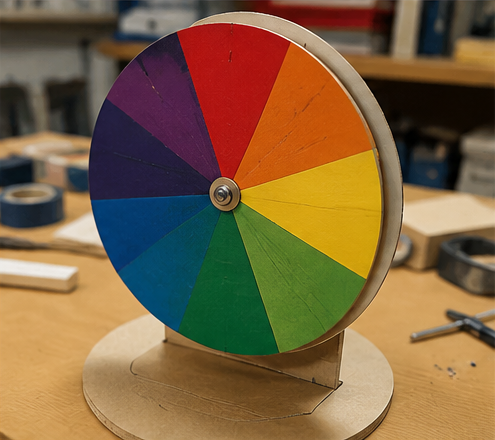
O que colocar aqui: foto do disco de Newton artesanal montado em cartolina, pronto para ser acoplado ao motor.
O que aprendemos?
Da física abstrata à experiência visual
No geral, aprendemos que a luz branca é composta por várias cores, e o Disco de Newton demonstra isso ao reunir essas cores em um círculo. Quando o disco gira rapidamente, as cores passam diante dos olhos em sequência e são percebidas quase ao mesmo tempo, fazendo com que o cérebro interprete essa combinação como uma cor próxima do branco.
O Disco de Newton ajuda estudantes a aprender sobre fenômenos da luz porque transforma um conceito da Física, que pode parecer abstrato e difícil de compreender, em uma experiência visual e prática. Ao construir e girar o disco, os alunos conseguem observar diretamente a luz branca e entender os conceitos de luz e percepção visual.
O experimento mostra como a combinação das cores da luz e a velocidade de percepção dos nossos olhos influenciam o que enxergamos.
Detalhes que poucos conhecem
Precisão em laboratório
O experimento feito em papel quase sempre resulta em um tom cinza ou bege claro. Para resolver isso, laboratórios modernos de física utilizam o Disco de LEDs, que, quando girado rapidamente, faz as cores se tornarem um branco brilhante e perfeito.
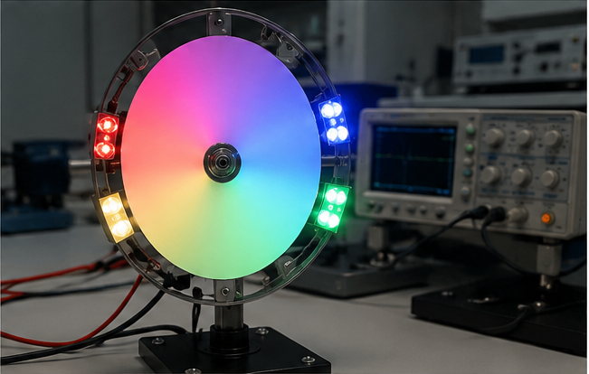
O que colocar aqui: foto de um disco de LEDs girando em um laboratório de física moderno.
A recepção em 1672
Quando Newton apresentou suas descobertas sobre a luz e as cores em 1672, cientistas renomados o criticaram. Eles acreditavam que o prisma de vidro "sujava" a luz pura do Sol com cores, e não que o branco fosse a soma delas.
Aditiva × subtrativa
Ao girar o disco, nossos olhos fazem uma soma das luzes refletidas (síntese aditiva). Já a mistura de tintas, por exemplo, teria como resultado um marrom ou cinza (síntese subtrativa).
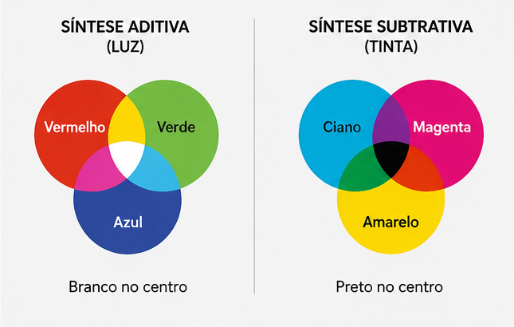
O que colocar aqui: diagrama comparando a síntese aditiva da luz (círculos coloridos de luz se sobrepondo em branco) e a síntese subtrativa das tintas (cores se sobrepondo em marrom/preto).
Sete cores, sete notas
Newton escolheu dividir o disco em sete cores por causa de uma crença filosófica da época, associando as cores às sete notas musicais da escala diatônica.
Uma piscina — e um site — pensados para incluir todo mundo
Acessibilidade não é só sobre o site: é também sobre quem consegue, de fato, chegar até a borda da piscina e entrar na água com segurança e autonomia. Por isso pensamos os dois lados do projeto.
Acessibilidade física da piscina
Elevador hidráulico e rampa
Um elevador de piscina e uma rampa de acesso com corrimãos permitem que pessoas com mobilidade reduzida entrem e saiam da água com autonomia e segurança.
Piso antiderrapante
Piso tátil e antiderrapante ao redor de toda a borda, reduzindo o risco de escorregões para todos os frequentadores, com atenção especial a pessoas com baixa visão.
Sinalização tátil e em Braille
Placas com informações em Braille e alto-relevo indicam profundidade, temperatura da água e rotas de circulação para pessoas com deficiência visual.
Faixas de profundidade contrastantes
Marcações de profundidade em cores contrastantes e números grandes, visíveis dentro e fora da água, facilitam a leitura por pessoas com baixa visão.
Vestiários adaptados
Vestiários e banheiros com barras de apoio, espaço para cadeira de rodas e bancos de transferência próximos à piscina.
Equipe capacitada
Salva-vidas e monitores treinados em atendimento inclusivo, prontos para apoiar pessoas com deficiência física, sensorial ou intelectual.
Acessibilidade digital deste site
Os recursos abaixo estão ativos nesta própria página — teste-os nos botões do cabeçalho.
Contraste ajustável
O botão "Alto contraste" no cabeçalho ativa uma paleta com contraste ampliado entre texto e fundo, acima do mínimo recomendado pela WCAG 2.1 (AA).
Texto redimensionável
O botão "Texto grande" aumenta a escala tipográfica de toda a página sem quebrar o layout, já que as medidas são relativas (rem), não fixas.
Texto alternativo
Toda imagem informativa do site tem uma descrição textual (atributo alt), lida por leitores de tela para quem não enxerga o conteúdo visual.
Navegação por teclado
Todo botão, link e controle do simulador pode ser alcançado e ativado apenas com o teclado, com indicação visível de foco.
Hierarquia clara
Títulos organizados em ordem lógica (h1 → h2 → h3) e um link de "pular para o conteúdo", que ajudam quem navega com leitor de tela ou teclado a se localizar.
Movimento respeitoso
Animações — como o Disco de Newton girando — são discretas e desativadas automaticamente para quem configura o sistema para reduzir movimento.
Equipe do Projeto Integrador
Turma 2º ano P.

Amanda Meyrin
2º ano P
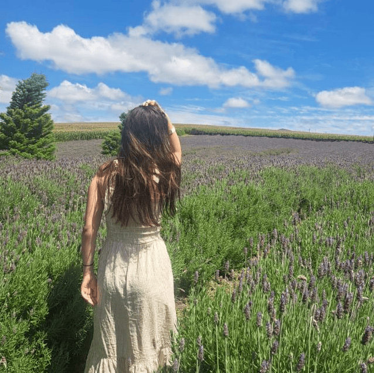
Beatriz Alves
2º ano P
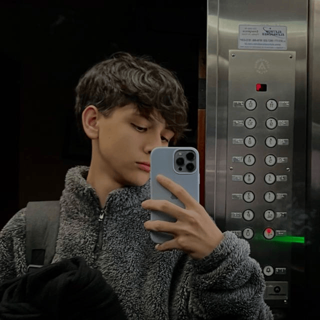
Daniel Augusto
2º ano P
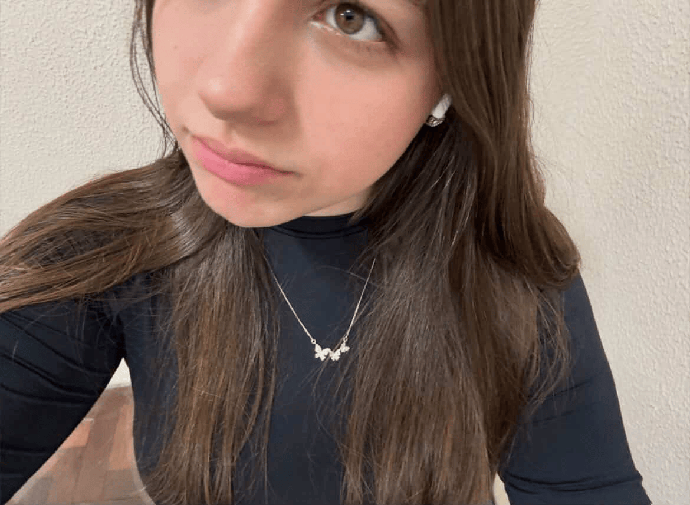
Rafaela Moraes
2º ano P
O que colocar em Img11–Img14: foto de rosto (retrato) de cada integrante da equipe, no mesmo enquadramento, para manter o grid alinhado.